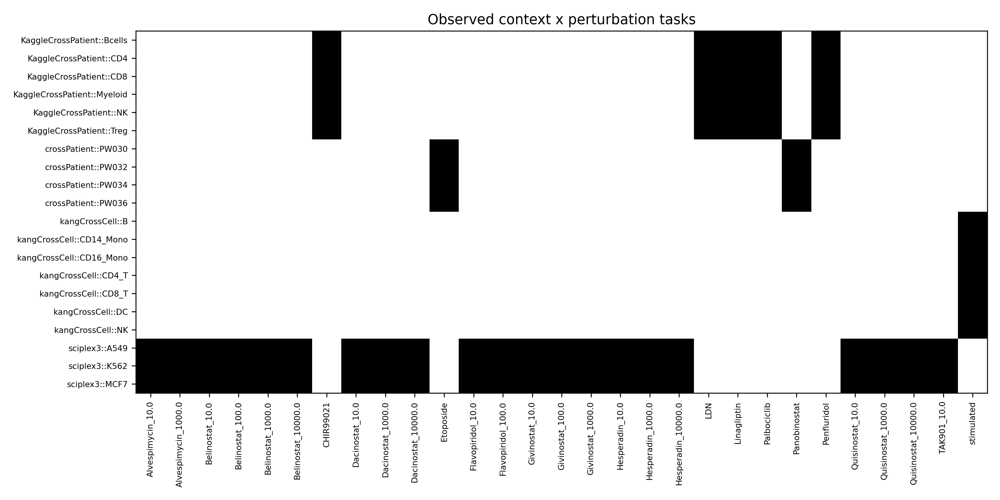
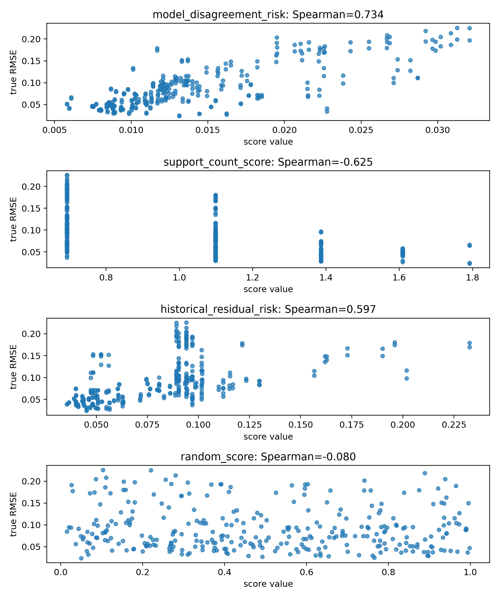
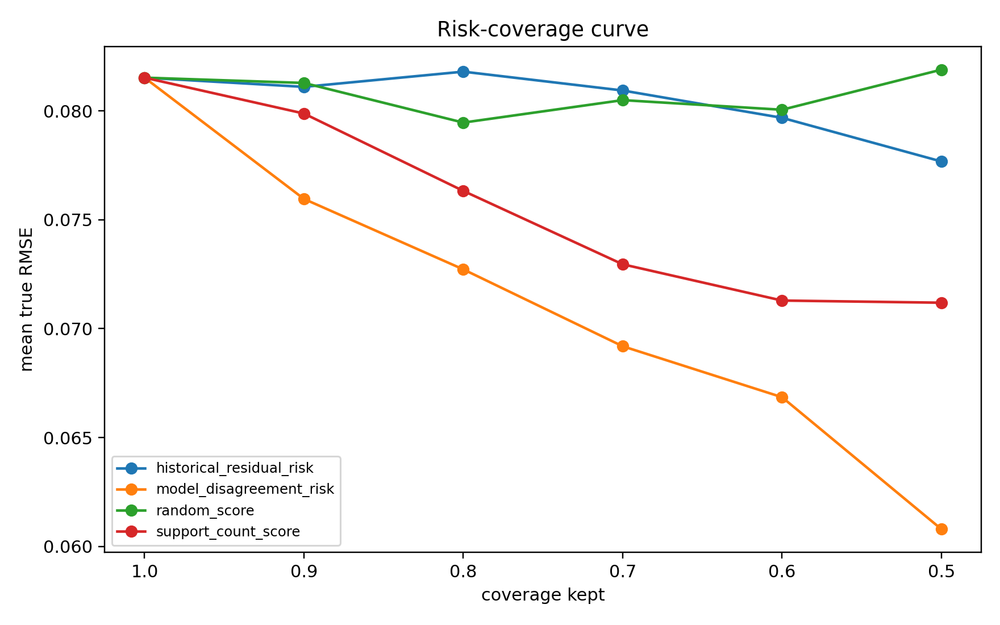
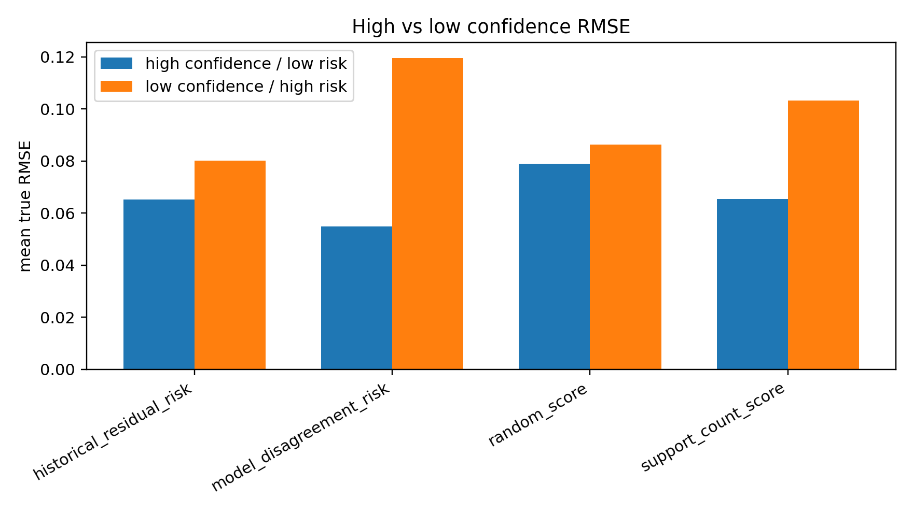
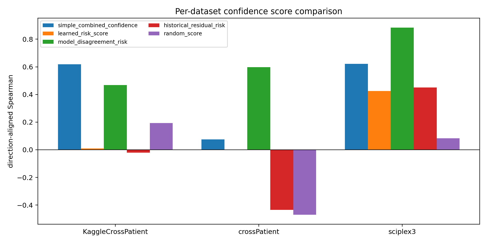
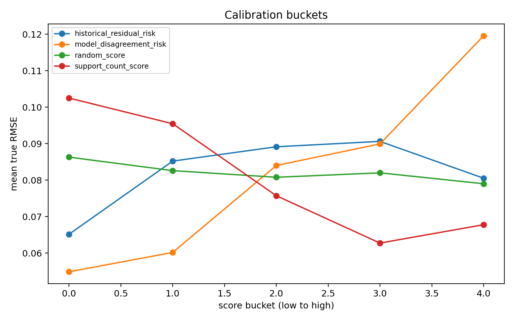
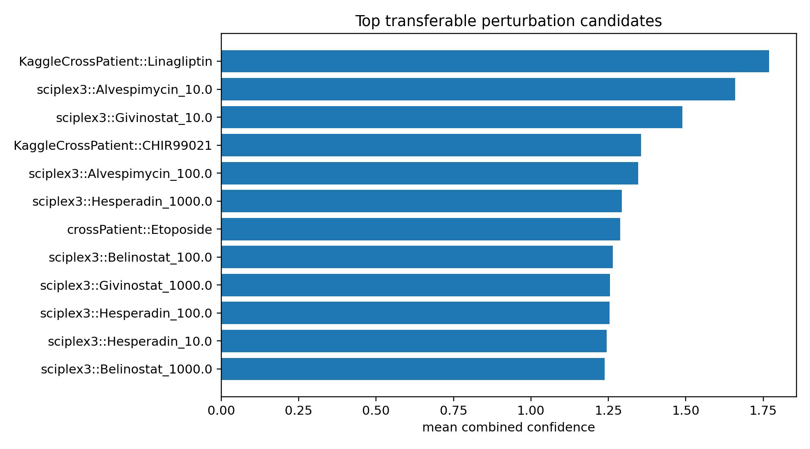

E12 外部面板扩展探针
这一步把 E10 从 3 个外部数据集扩展到 6 个候选。重点是筛清楚哪些数据适合 held-out pair，哪些需要换验证定义。
候选数据集
6
可评估数据集
3
test 记录
308
best rho
0.734
simple cov80
11.51%
1. 数据集适配
| dataset | n_tasks | n_contexts | n_perturbations | context_col | perturbation_col | n_test | e12_status |
|---|---|---|---|---|---|---|---|
| kangCrossCell | 8 | 8 | 1 | cell_type | perturbation | 0 | not_evaluable_under_heldout_pair |
| kangCrossPatient | 8 | 8 | 1 | condition1 | perturbation | 0 | not_evaluable_under_heldout_pair |
| KaggleCrossPatient | 40 | 6 | 10 | cell_type | perturbation | 40 | evaluable |
| crossPatient | 10 | 6 | 2 | condition1 | perturbation | 8 | evaluable |
| TCDD | 6 | 6 | 1 | condition1 | perturbation | 0 | not_evaluable_under_heldout_pair |
| sciplex3 | 106 | 3 | 36 | cell_type | perturbation | 106 | evaluable |
2. 每数据集主结果
| dataset_name | simple_combined_confidence_aligned_rho | simple_combined_confidence_risk_cov_80_improve_pct | learned_risk_score_aligned_rho | learned_risk_score_risk_cov_80_improve_pct | model_disagreement_risk_aligned_rho | model_disagreement_risk_risk_cov_80_improve_pct |
|---|---|---|---|---|---|---|
| KaggleCrossPatient | 0.618747 | 14.383236 | 0.009235 | -1.943495 | 0.468595 | 12.094574 |
| crossPatient | 0.075333 | 2.441169 | 0.000000 | 0.000000 | 0.597644 | -0.167093 |
| sciplex3 | 0.622404 | 17.690673 | 0.425516 | 7.803259 | 0.884577 | 18.193139 |
3. Overall 信号排序
| score_name | score_type | n | direction_aligned_spearman | risk_cov_80_improve_pct | high_low_rmse_gap |
|---|---|---|---|---|---|
| model_disagreement_risk | risk | 308 | 0.734406 | 10.040207 | 0.064697 |
| support_count_score | confidence | 308 | 0.624740 | 7.144678 | 0.037830 |
| historical_residual_risk | risk | 308 | 0.596586 | -0.809355 | 0.014959 |
| simple_combined_confidence | confidence | 308 | 0.537476 | 11.505026 | 0.052048 |
| learned_risk_score | risk | 296 | 0.446422 | 1.953255 | 0.000757 |
| context_similarity_score | confidence | 308 | 0.335464 | -0.735439 | -0.003750 |
| random_score | confidence | 308 | 0.080481 | 2.449128 | 0.007404 |
| ood_distance_risk | risk | 308 | -0.080645 | -6.363686 | -0.035143 |
| perturbation_stability_score | confidence | 178 | -0.219792 | -3.338171 | -0.031456 |
| prediction_magnitude_risk | risk | 308 | -0.271350 | 1.012284 | 0.007875 |
4. 解释边界
E12 有 6 个候选，但只有 3 个可按 held-out pair 评价。sciplex3 信号很强，crossPatient simple combined 很弱；learned risk 仍没有超过 disagreement。
5. 图件








